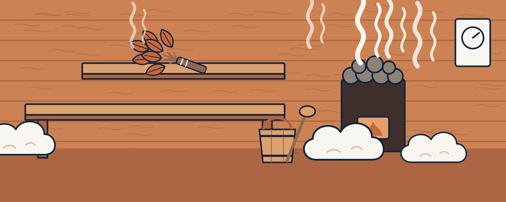
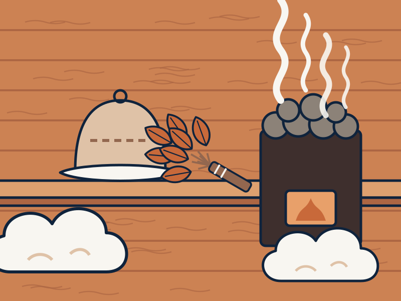
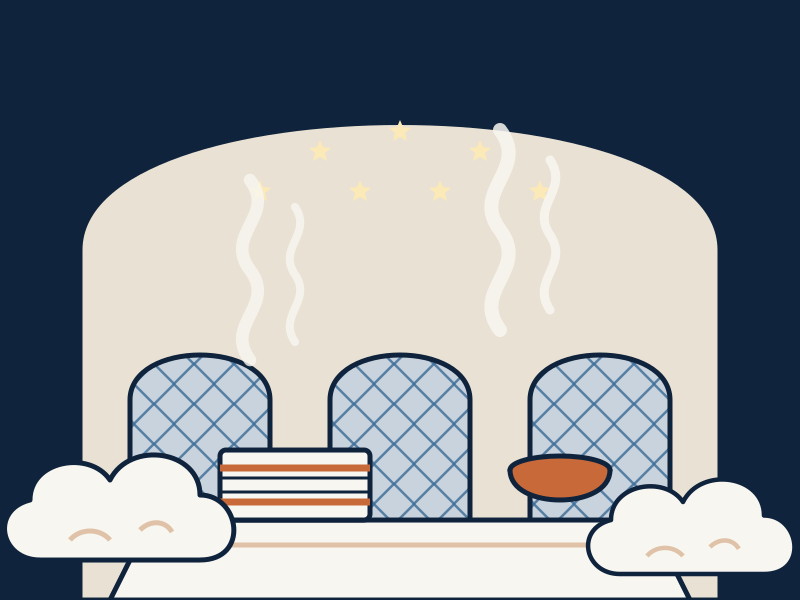
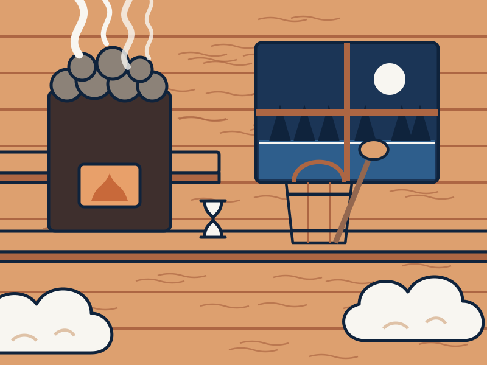

Heat, water and an hour that belongs to you.
Banya, hammam and sauna come from different corners of the world, but they share one idea: get properly hot, cool down, rest, and come out feeling new.
Russian banya
- Temperature
- 60–90°C
- Humidity
- 40–70%
Water on the stones fills the room with heavy, soft steam.

The ritual, in four rounds
Whichever tradition you choose, the rhythm is much the same. Most people repeat it two to four times.
Heat
Shower, then sit in the heat for 8 to 15 minutes. Leave when you feel ready, not when the timer says so.
Cool
A cold plunge, a cold shower or a bucket of cold water. Short and bracing is enough.
Rest
Sit or lie down for 10 to 15 minutes. Drink water or herbal tea and let your heart rate settle.
Repeat
Go back in for another round. Finish with a longer rest before you get dressed.
Three traditions side by side
Not sure which one suits you? The main difference is how hot and how humid the room is.



| Tradition | Banya | Hammam | Sauna |
|---|---|---|---|
| Where it comes from | Russia and Eastern Europe | Ottoman Turkey, the Middle East and North Africa | Finland |
| Temperature | 60–90°C | 40–50°C | 70–100°C |
| Humidity | Moist, soft steam | Saturated steam | Dry, with bursts of steam |
| Signature ritual | Steaming with a venik | Kese scrub and foam wash | Löyly: water on the stones |
| What you need | Venik, felt hat, bucket | Peshtemal, kese mitt, black soap | Ladle, bucket, timer, oils |
Bathe safely
- Drink water before, between and after rounds.
- Skip alcohol before and during your session.
- Get out straight away if you feel dizzy, faint or unwell.
- Talk to your doctor first if you are pregnant, have a heart condition or high or low blood pressure, or take regular medication.
- Children should only bathe with an adult, at lower temperatures and for shorter rounds.